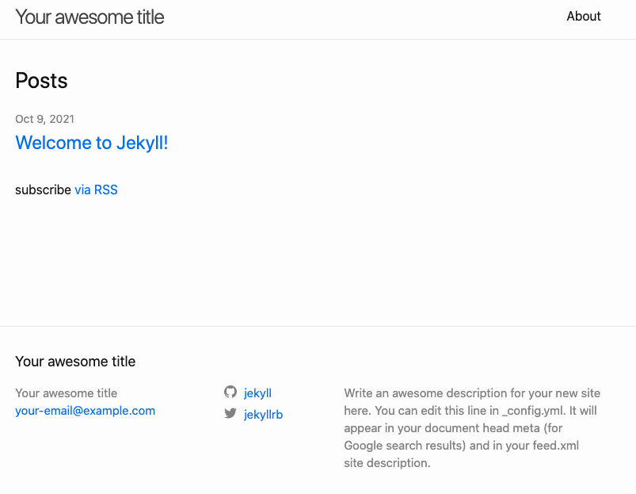
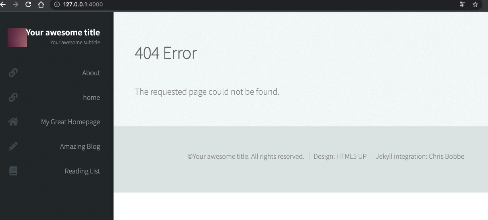

notion에서 gitblog로 이사
:: github에서 블로그를 사용하기 위한 사전 준비
** 이대로 하기만 하면 됨
** 오류 1
remote: Support for password authentication was removed on August 13, 2021. Please use a personal access token instead.
push할 때 위의 에러가 나면,
깃 토큰 인증(Git personal access token)
** 오류 2
unable to access ‘/Users/${userName}/.config/git/attributes’: Permission denied
Unable to access ‘git/attributes’
** 오류 3
jekyll을 설치하려고 하다보니 ruby로 되어있어서… 온갖 오류를 다 만났습니다…
ruby는 모르기도 하고…포기할 뻔
jekyll: command not found
** 오류 4
You don’t have write permissions for the /Library/Ruby/Gems/2.6.0 directory
Mac에서 Gem::FilePermissionError 에러 발생시 해결 방법
** 오류 5
겨우겨우 ruby버전 업하고 jekyll도 설치해서, 서비스 구동하려고 하니까 또 다른 오류 발생
jekyll/commands/serve/servlet.rb:3:in `require’: cannot load such file – webrick (LoadError)
하필 ruby를 3.0.2로 업그레이드 했더니,,, 3.x부터 webrick이 빠졌다고 하네요 ㅠㅜ
별도로 webrick을 설치해줘야합니다.
jekyll 실행 시킬 때 `require’: cannot load such file – webrick (LoadError) 오류가 난다면 bundle add webrick
:: 축!
드디어 기본 준비가 끝이 났습니다……

:: 블로그에 Jekyll 테마 적용하기
이제는 jekyll을 잘 꾸며볼 차례입니다..
아래 블로그에서 가이드대로 따라하면 됩니다.
왕초보를 위한 Github 블로그 만들기 (2) - 테마 적용(with Jekyll)
무료버전으로 찾아봤습니다 ㅋㅋ
저는 이것으로 선택(jekyll-theme-prologue)
GitHub - chrisbobbe/jekyll-theme-prologue: A Jekyll version of the “Prologue” theme by HTML5 UP
:: 오류 1
다운받은 테마 파일을 bundle install 하려고 하니까, 다운받은 gemfil과 버전이 안맞았네요
Fetching gem metadata from https://rubygems.org/.........
Resolving dependencies...
Bundler could not find compatible versions for gem "bundler":
In Gemfile:
bundler (~> 1.12)
Current Bundler version:
bundler (2.2.29)
Your bundle requires a different version of Bundler than the one you're running.
Install the necessary version with `gem install bundler:1.17.3` and rerun
bundler using `bundle _1.17.3_ install`
—> gemfile만 원래 파일로 돌려놓고, 덮지 않음
:: 오류 ??
Bundler could not find compatible versions for gem "bundler":
In Gemfile:
bundler (~> 1.12)
Current Bundler version:
bundler (2.2.29)
Your bundle requires a different version of Bundler than the one you're running.
Install the necessary version with `gem install bundler:1.17.3` and rerun
bundler using `bundle _1.17.3_ install`
이건 gem 을 ‘~>1.12’ 까지 설치하고, gemfile.lock파일 삭제하고 bundle 1.17.3 install 해주고 해서 해결하긴 했는데요…
삽질을 많이하고 오류를 너무 많이 봐서 다 정리를 못하겠습니다. ㅠㅜ ruby도 삭제하고 다시 설치하고
하..포기할 뻔..

겨우 테마 설치 완료 ^__^
:: gitblog에 광고 적용하기
기존에 사용하던 애드센스가 있었기 때문에, 어렵지 않게 광고를 재개할 수 있었습니다.
관리페이지에서 새로운 주소로 사이트를 추가하고 스크립트를 include\head_custom.html하위에 추가하면 끝.
참고)
:: DNS 적용하기
gitblog를 생성하면, username으로 기본 주소가 되기 때문에 도메인네임을 추가해서 포워딩서비스를 하는 것이 좋습니다.
- 저는 freenom을 사용하고 있어서 freenom에 무료 도메인 하나 더 추가생성했습니다.
- freenom에 github와의 nameserver를 설정해야하는데요. 아래 블로그 참고하면 간단합니다.
| [도메인 무료로 SSL/TLS(HTTPS) 얻는 법 | Freenom & GitHub Pages](https://m.blog.naver.com/desbey7/222092439777) |
dns와 sitemap관계
아무리 sitemap을 수정해도 가져올 수 없다고만 나와서 수동 등록까지 했는데요. https://itgall.com/programming/236207 글 읽고, 다시 cf도메인 연결을 삭제하고 github.io로 돌려놨습니다.
:: 구글 검색엔진에 노출시키기
:: 파비콘 적용
저는 니아 언더 세븐의 니아 이미지를 추출해서 적용했습니다.
[Github Blog] 파비콘(Favicon) 세팅하기
header코드에 이미 선언되어 있어서, 생성한 파비콘 파일을 기존과 동일한 이름으로 교체만 해주었습니다!!
:: 댓글 추가
에드고시에 거듭 실패해서 이런 저런 이유를 찾던 중, 댓글기능이 없어서 그럴 수도 있단 글을 읽고 jekyll에 댓글 기능을 추가했습니다. 자세한 내용은 아래 블로그를 참고해주세요. 되게 간단하네요! utterance 댓글 설치
:: 태그 추가
아직도 할 것이 많네요 ㅋㅋㅋㅋ 태그가 등록된다면 검색될 확률이 높아질 것 같아서 태그도 추가했습니다. 태그 추가
:: 검색엔진 등록
구글 서치엔진
- 저는 jekyll-sitemap 플러그인을 사용해서 sitemap.xml을 만들었는데요. 아무리해도 “사이트맵을 읽을 수 없음”만 표시되어서 잘못 만들어졌다 했는데요.
- 처음엔 last_modified_at가 없어서 그런듯 싶어서, layout도 post로 변경하고 추가해줬습니다.
- 사이트맵 validation 체크 사이트에서도 체크했는데요. 정상으로 표시됩니다.
:: 마무리
조금씩 notion이나 에버노트 내용을 옮기고 있습니다.